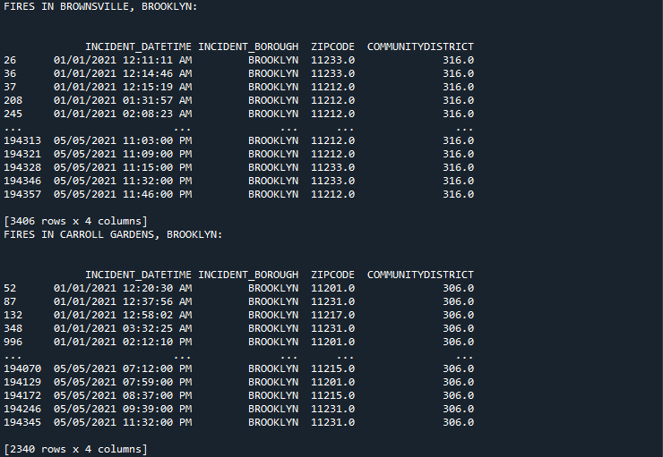

Brooklyn Fire Data
Similar to Queens, Brooklyn also contains areas within the borough that are considered either low-income or high-income areas. An example of a low-income area I used is the area of Brownsville, Brooklyn. As for high-income, I chose the city of Carroll Gardens, Brooklyn. Brownsville's community district code is 316, according to the data table, and the district code for Carroll Gardens is 306. After filtering each city by their own community district within the table, Brownsville contained 3,406 fire related incidents while Carroll Gardens contained 2,340 fire related incidents in the first 5 months of 2021. Brownsville has over 1,000 more incidents compared to Carroll Gardens.
